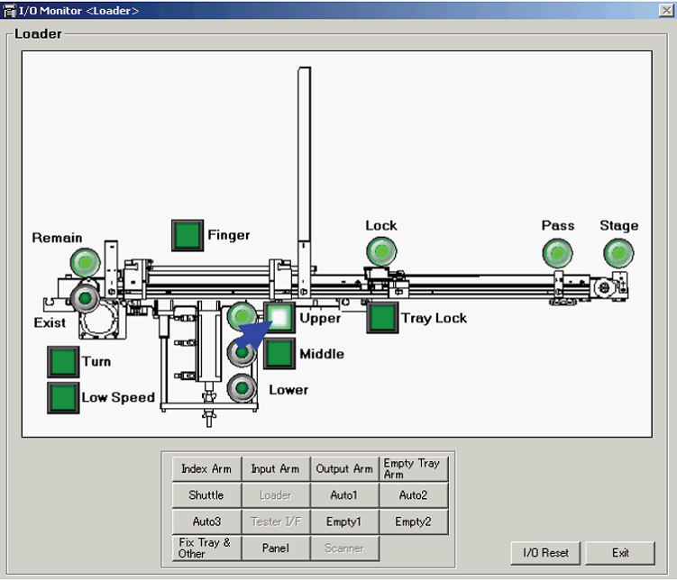

A5 How to adjust about tray lift height of loader tray separation position
Common for all EPSON handler
Loader: Tray Lift Height Adjustment
You need to change the tray lift plate of the loader according to the tray type (thickness).
Usually, it is able to separate the loader tray to change the lift plate.
However, when the tray lift plate cannot separate the trays because of the tray size or when the separation nails hold the trays without intending to, adjust the tray lift height.
To adjust the tray lift height, use the height adjuster wing nut below the loader unit (below the separation cylinder).
1. Click the <Maintenance> button of the HMI main window.
2. Click the [Maintenance] dialog-[Maintenance]-<Controller> icon. The [Main Menu] dialog appears.
3. Click the <I/O Monitor> button.
4. Click the <Loader> button.
5. Place a tray on the loader.
6. Click the <Upper> button to move the tray upward.

7. Click the <Finger> button to retract the separation nails.
8. Click the <Middle> button to move the tray down to the separation position.
9. Click the <Finger> button and put out the separation nail.
10. Adjust the lift height using the wing nut to make the space 0.3 ~ 0.5 mm between the tray surface and the separation nail bottom surface.
To move up the tray : Loosen the upper wing nut and rotate the lower wing nut to the
right. When the height is set, lock the upper nut.
To move down the tray : Loosen the lower wing nut. When the height is set, lock the upper nut.
11. Click the <Middle> button again to lower the tray.
12. Remove the tray from the loader.